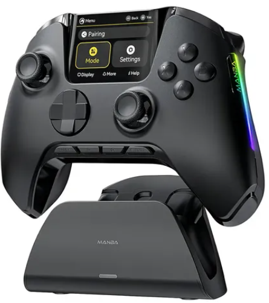

Manba One V2
O controle mais preciso já criado.
1 ms de latência sem fio, sticks Hall Effect que nunca sofrem drift e uma ergonomia esculpida para sessões de horas. Cada detalhe existe para tirar milissegundos do seu caminho.
Tecnologia
Feito para vencer no detalhe.

01 · Recurso
Molda-se à sua mão.
Curvas estudadas para sessões de horas sem fadiga: cada apoio e cada ângulo desenhados para o seu polegar chegar exatamente onde precisa.
Ficha técnica
Cada número, testado.
A especificação completa do MANBA ONE V2 — sem letra miúda, sem "até" escondido.
Desempenho
- Latência sem fio
- 1 ms
- Taxa de polling
- 1000 Hz
- Processador
- Dedicado, 32-bit
Sticks & gatilhos
- Tecnologia
- Hall Effect
- Curso do gatilho
- 2 níveis
- Desgaste por atrito
- Nenhum
Tela & interface
- Tela
- 2.4" IPS touch
- Perfis salvos
- Ilimitados*
- Idiomas
- PT-BR · EN
Bateria & energia
- Autonomia
- Até 30h
- Conector
- USB-C
- Carregamento
- Dock magnético
Conectividade
- Sem fio
- 2.4GHz proprietário
- Bluetooth
- 5.3
- Cabo
- USB-C → USB-A
Compatibilidade
- PC
- Windows 10 / 11
- Console
- Nintendo Switch
- Mobile
- Android · USB/BT
*Perfis salvos localmente no controle; sincronização por app entra em uma atualização futura de firmware.
Por que MANBA
1msDe latência real — não "até 1 ms". 1 ms.
Enquanto um controle comum ainda está processando o seu clique, o MANBA ONE V2 já entregou o comando. É essa fração de segundo que separa o tiro certo do respawn.